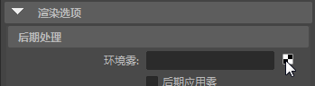
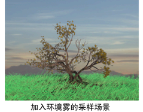

若要使用 Maya 软件渲染模拟雾、烟、灰尘或其他大气效果，可创建一个体积基本体（形状），然后将 Maya 的其中一种体积材质指定给该形状。
注意：
环境雾无法投射阴影。如果要投射阴影，请使用“灯光雾”(Light Fog)。
创建环境雾
- 在“渲染设置”(Render Settings)窗口的“Maya 软件”(Maya Software)选项卡的“渲染选项”(Render Options)区域中，单击“环境雾”(Environment Fog)属性旁边的贴图按钮。Maya 会自动创建一个环境雾节点和一个环境雾灯光节点（环境光）。

- 在“简单雾”(Simple Fog)或“物理雾”(Physical Fog)之间进行选择。有关其中每个雾类型的详细信息，请参见环境雾。
- 根据需要放置环境雾。若要以交互方式放置环境雾，请按热键 t 以显示摄影机/灯光操纵器。或者，可以选择显示 > 渲染(Display > Rendering) > “摄影机/灯光操纵器”(Camera/Light Manipulator)，然后在不同类型的灯光操纵器中选择。
有关操纵器的详细信息，请参见显示、隐藏灯光操纵器或调整其大小。

调整环境雾的深度范围
- 若要使环境雾填充特定区域（介于距摄影机的两个距离之间），请将“距离剪裁平面”(Distance Clip Planes)设置为“雾近/远”(Fog Near/Far)，并调整“雾近距”(Fog Near Distance)和“雾远距”(Fog Far Distance)属性。
调整环境雾的垂直范围
- 若要使环境雾填充特定垂直区域，请启用“使用高度”(Use Height)，并调整“最小高度”(Min Height)和“最大高度”(Max Height)属性。若要使区域的边逐渐融合，请调整“融合范围”属性。
在环境雾的密度和颜色中创建变化
- 若要跨摄影机的视图在环境雾的密度和颜色中创建变化，请启用“使用层”(Use Layer)，并为“层”(Layer)属性指定一种纹理。（可能需要限制“融合范围”(Blend Range)，并增加环境雾形状的“体积采样数”(Volume Samples)才能看到效果。）